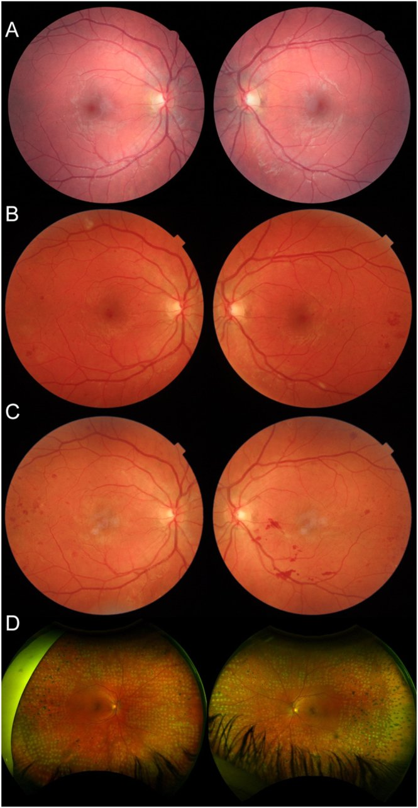
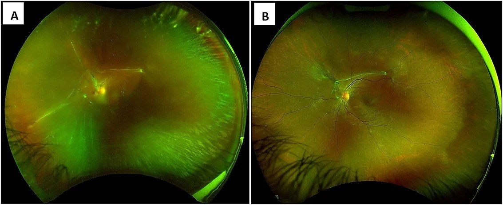
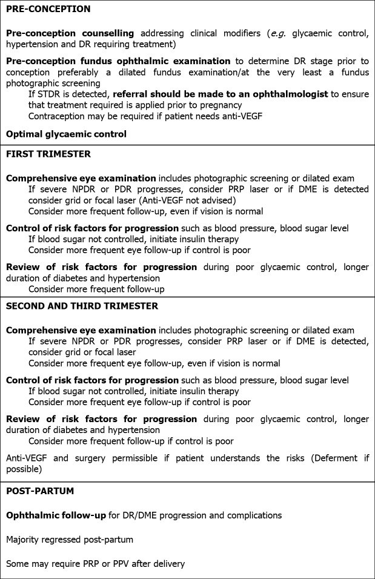

490 — Bệnh võng mạc đái tháo đường trong THAI KỲ: lịch soi đáy mắt theo tam cá nguyệt, tiến triển rồi thoái lui sau sinh, ngưỡng laser/anti-VEGF trước sinh / Diabetic retinopathy in pregnancy
Tags: pattern:tien-trien-dr pattern:phu-hoang-diem pattern:tan-mach-vong-mac vung:vong-mac vung:hoang-diem score:ETDRS protocol:soi-day-mat-gian-tiep protocol:OCT-hoang-diem
Mức chắc chắn (certainty): tổng hợp y văn (literature synthesis) — tự biên từ review mở CC BY/CC BY-NC (Diagnostics 2024, Indian J Ophthalmol 2021, World J Diabetes 2021), đoàn hệ lớn (Diabet Med 2022, n = 348; Diabetes Care 2025, đoàn hệ ghép cặp toàn quốc n = 2.082) và 2 ca nguyên văn CC BY 4.0/CC BY-NC 4.0; số liệu lấy nguyên từ bài gốc, tên tác giả đối chiếu PMCID.
Bài này trả lời 4 câu hỏi của bác sĩ CĐHA/mắt khi thai phụ đái tháo đường đến khám: (1) Chụp đáy mắt lúc nào, bao nhiêu lần? (2) Tiến triển thật hay chỉ là thay đổi sinh lý của thai? (3) Khi nào laser, khi nào anti-VEGF, có phải mổ lấy thai vì mắt không? (4) Sau sinh còn theo dõi bao lâu? Đây là bài nối tiếp 443 – Bệnh võng mạc đái tháo đường (phân độ, OCT, laser) và 488 – HCQ trong thai kỳ (khung "mờ mắt ở thai phụ nghĩ sản khoa trước"). Không lặp lại kỹ thuật đọc OCT/laser của 443.
1. Tổng quan bệnh học – cơ chế hình ảnh
1.1 TẠI SAO thai kỳ làm võng mạc đái tháo đường "động" hơn — 4 cơ chế chồng lên nhau
- Huyết động: thể tích huyết tương tăng 40–50% → pha loãng máu, giảm độ nhớt; lưu lượng máu võng mạc đo bằng Doppler tăng ngay từ tam cá nguyệt 1. Mao mạch võng mạc đái tháo đường đã mất tự điều hòa (loss of autoregulation) → tăng áp lực thủy tĩnh lên thành mao mạch vốn đã giòn → vi phình mạch mới, phù, xuất huyết.
- Nội tiết – nhau thai: hPL (human placental lactogen), progesterone, estrogen, cortisol và IGF-1 tăng; nhau thai tiết VEGF hòa tan (sFlt-1/PIGF mất cân bằng) → tăng tính thấm mao mạch. Đây là lý do phù hoàng điểm (DME) nặng lên dù đường huyết không xấu đi.
- Hệ renin–angiotensin tại mắt: thai kỳ hoạt hóa RAAS nội nhãn → co mạch và tăng sinh mạch.
- "Xấu đi sớm" (early worsening) khi siết đường huyết quá nhanh: khi HbA1c giảm nhanh, lưu lượng máu võng mạc giảm đột ngột → thiếu oxy tương đối → VEGF tăng → DR nặng lên trong 6–12 tháng đầu. DCCT: 13% ở nhóm siết chặt so với 7,6% ở nhóm điều trị thường quy; nguy cơ tăng gấp đôi (OR 2,7) khi HbA1c nền > 6 SD trên trung bình nhóm chứng. Nghĩa là không chỉ đường huyết xấu mới làm nặng — siết quá nhanh cũng vậy.
1.2 Vì sao đọc ảnh bằng OCT/FA/ảnh góc rộng chứ không chỉ soi đáy mắt
- OCT hoàng điểm (SD-OCT): giao thoa ánh sáng hồng ngoại gần (bước sóng ngắn, độ tương phản cao) đo độ dày võng mạc theo µm và phát hiện nang nội bào, dịch dưới võng mạc, màng ngăn (epiretinal membrane), co kéo — những thứ không thấy rõ khi soi đáy mắt và là thứ quyết định có phù hoàng điểm trung tâm (DME) hay không.
- FA (fluorescein angiography): thấy rò (leakage) từ vi mạch/Tân mạch; vùng không tưới máu (capillary non-perfusion) — nhưng không dùng thường quy khi mang thai nếu không cần thiết (thuốc nhuộm qua nhau thai, dữ liệu an toàn hạn chế).
- Ảnh đáy mắt góc rộng (wide-field 200°) hoặc 7 trường ETDRS: tân mạch ngoại vi (NVE) nằm ngoài khung 45° là lý do hay bị bỏ sót "PDR nhẹ" trên ảnh chụp thường quy.
- Siêu âm B-scan: bắt buộc khi xuất huyết dịch kính (VH) che đáy mắt — để loại bong võng mạc co kéo (TRD) trước khi quyết định mổ.
1.3 Ngưỡng định lượng nằm lòng (bắt buộc nhớ)
| Chỉ số | Con số | Nguồn |
|---|---|---|
| DR lúc khám thai đầu | 52% (116/223) ĐTĐ type 1; 14% (17/125) type 2 | Diabet Med 2022, n = 348 (PMC9303564) |
| DR đe dọa thị lực (STDR) lúc đầu thai | 16% type 1; 6% type 2 | cùng nguồn |
| Cần điều trị trong thai | 2,7% (type 1) và 2,4% (type 2) | cùng nguồn |
| Không DR + HbA1c < 53 mmol/mol (7,0%) đầu thai | 0/175 tiến triển STDR; 94% vẫn không có DR | cùng nguồn |
| NPDR mức trung bình lúc đầu → tân sinh trong thai | 29% | DIEP study, dẫn qua Diagnostics 2024 (PMC10887682) |
| Không DR lúc đầu → dấu hiệu nhẹ | ~12% | cùng nguồn |
| Nguy cơ tiến triển so với không mang thai (cũ) | 1,6–2,5 lần | 2 nghiên cứu nhỏ thập niên 1990 |
| Nguy cơ tiến triển PDR (đoàn hệ ghép cặp 2025) | aHR 0,64 (95% CI 0,32–1,31) — không tăng | Diabetes Care 2025 (PMC12451835) |
| PRP trong thai (ghép cặp) | 1,2% vs 1,1%; OR 1,18 (0,53–2,66) | cùng nguồn |
| Thời gian nguy cơ còn cao sau sinh | đến 12 tháng | DCCT, dẫn qua 2 review |
| HbA1c đích trước sinh / trong thai | < 6,5% (48 mmol/mol) / 6,0–6,5% nếu không hạ đường huyết | ADA Standards of Care |
2. Mẫu hình + chẩn đoán phân biệt theo vị trí (gamut)
Câu hỏi lọc: *"Thai phụ đái tháo đường giảm thị lực — tổn thương ở hoàng điểm (DME), ở võng mạc ngoại vi (PDR/VH) hay không do đái tháo đường?"*
- Hoàng điểm (macular):
- DME trung tâm (center-involving): dày võng mạc ≥ 250–300 µm hoặc nang nội bào trên OCT, xuất tiết cứng hình vòng; thị lực giảm từ từ.
- Bong thanh dịch do tiền sản giật (SRD): dịch dưới võng mạc, hai bên, kèm hẹp tiểu động mạch, đốm Elschnig, HA cao ± protein niệu — không có xuất huyết/tân mạch.
- CSCR: bong vòm hoàng điểm, không xuất huyết, thường một bên; thai kỳ là yếu tố thuận lợi.
- Tắc nhánh/trung tâm tĩnh mạch võng mạc: thai kỳ tăng đông — xuất huyết theo vùng, phù lan.
- Ngoại vi (peripheral):
- PDR: NVD/NVE, xuất huyết trước võng mạc hình "thuyền", có thể kèm VH.
- VH: mất đỏ phản quang, không thấy đáy mắt → siêu âm B-scan loại TRD.
- TRD: dải co kéo cố định, võng mạc căng — mổ, không chờ.
- Ngoài võng mạc (mimic):
- Thay đổi khúc xạ/giác mạc thai kỳ: mờ nhẹ hai bên, đáy mắt bình thường, hồi phục sau sinh.
- IIH / u tuyến yên (lymphocytic hypophysitis): đau đầu, mất thị trường hai thái dương, phù đĩa thị.
- Thiếu máu thiếu sắt nặng: xuất huyết võng mạc hai bên, thiếu máu trung tâm (bài 453).
3. Bảng so sánh phân biệt (ma trận đối chiếu)
| Thực thể | Hình ảnh điển hình | Chốt vào (rule-in) | Chốt loại (rule-out) | Gợi ý xác nhận |
|---|---|---|---|---|
| DME (phù hoàng điểm ĐTĐ) | Dày võng mạc trung tâm, nang nội bào, xuất tiết cứng | Dày ≥ 250 µm ở trung tâm hoặc nang nội bào trên OCT + tiền sử ĐTĐ | OCT hoàng điểm bình thường (< 250 µm, không nang) → không phải DME trung tâm | OCT mỗi lần khám nếu nghi; laser focal/grid trong thai; hoãn anti-VEGF |
| PDR | NVD/NVE, xuất huyết trước VM, VH | Tân mạch trên đĩa/thân võng mạc ở bất kỳ vị trí | Chỉ vi phình mạch/xuất huyết nhỏ, không tân mạch → NPDR | Ảnh góc rộng 200° hoặc 7 trường; PRP ngay khi đủ điều kiện |
| TRD | Dải xơ co kéo, VM căng, VH tái phát | Dải co kéo cố định trên OCT/US + VH không tan | Siêu âm không thấy dải co kéo → chưa mổ | Phẫu thuật cắt dịch kính (không phụ thuộc thai) |
| Bong thanh dịch do tiền sản giật | SRD hai bên quanh đĩa thị/hố trung tâm, đốm Elschnig | HA cao ± protein niệu + SRD hai bên + hẹp tiểu động mạch | Có tân mạch/xuất huyết dày → nghĩ ĐTĐ chứ không phải tiền sản giật | Theo dõi sản khoa; thường tự hết sau sinh (bài 488) |
| CSCR | Bong vòm hoàng điểm, nâng RPE, không xuất huyết | Không tăng HA + bong vòm + điểm rò trên FA | Có xuất huyết/nang dày → không phải CSCR | Theo dõi; tránh corticoid |
| Thay đổi sinh lý thai kỳ | Đáy mắt bình thường, có thể dày hắc mạc | Mờ nhẹ, hai bên, không tổn thương võng mạc | Có bất kỳ tổn thương võng mạc → không quy cho sinh lý | Hồi phục sau sinh; không điều trị |
4. Protocol chụp + lịch theo dõi (chuẩn hóa)
4.1 Trước khi mang thai (quan trọng nhất)
- Khám đáy mắt giãn đồng tử + ảnh 7 trường/góc rộng + OCT hoàng điểm trước khi thụ thai.
- Nếu có STDR (PDR hoặc DME có ý nghĩa lâm sàng): điều trị trước khi mang thai (PRP/laser), vì thai kỳ làm việc điều trị khó hơn.
- Tư vấn: PDR lúc bắt đầu thai là yếu tố nguy cơ mạnh nhất cho tiến triển; cân nhắc trì hoãn có kế hoạch nếu cần anti-VEGF (thuốc cần thời gian thải).
- HbA1c đích < 6,5% (48 mmol/mol) trước thụ thai — nhưng giảm từ từ để tránh early worsening.
4.2 Trong thai — hai hệ khuyến cáo chồng lấn
| Thời điểm | NICE / RCO / ICO | ADA / AAO PPP |
|---|---|---|
| Khám thai đầu | Soi đáy mắt giãn đồng tử (hoặc ảnh) | Sớm sau thụ thai, tam cá nguyệt 1 |
| Nếu khám đầu bình thường | Lặp 28 tuần | Không DR/tối thiểu: tam cá nguyệt 1 và 3 |
| Nếu có bất kỳ DR | Lặp 16–20 tuần | NPDR nhẹ: mỗi tam cá nguyệt |
| NPDR trung bình–nặng / PDR | Theo dõi sát | Mỗi 1 tháng (ADA) / 1–3 tháng (AAO PPP) |
| Sau sinh | Tiền tân sinh (pre-proliferative): theo dõi ≥ 6 tháng | 1–2 tháng sau sinh nếu có DME/NPDR; đến 12 tháng |
- Hình ảnh mỗi lần khám: ảnh màu góc rộng/7 trường + OCT hoàng điểm nếu nghi DME; B-scan nếu VH.
- Bổ sung thai kỳ: khám huyết áp, protein niệu, HbA1c, cân nặng mỗi lần — vì tăng HA/tiền sản giật là yếu tố làm nặng DR độc lập.
4.3 Điều trị trong thai — thứ tự ưu tiên
- PRP (panretinal photocoagulation): an toàn và là lựa chọn ưu tiên cho PDR trong thai; có thể làm từng phần (PRP chia đợt) để dung nạp; theo dõi sát vì có thể cần bổ sung sau sinh.
- Laser focal/grid cho DME: an toàn; là lựa chọn khi DME trung tâm không đe dọa tức thì.
- Anti-VEGF: tránh trong tam cá nguyệt 1 (báo cáo sảy thai sau tiêm bevacizumab tuần 5–12); nếu bắt buộc (VH dày không laser được, DME tiến triển nhanh): làm muộn thai kỳ, ưu tiên ranibizumab (thời gian bán thải ngắn, thanh thải nhanh), tư vấn đa chuyên khoa + đồng thuận.
- Ca faricimab 2026: thai 29 tuần 6 ngày, PDR nguy cơ cao + VH dày, 1 mũi faricimab → thị lực CF → 20/25 sau 1 tháng; mổ lấy thai 36 tuần 1 ngày vì tim thai; không biến cố nào quy cho thuốc (PMC13676271, CC BY-NC 4.0).
- Có thể hoãn anti-VEGF 6–9 tháng: RESTORE extension cho thấy thị lực 3 năm ở nhóm hoãn 12 tháng tương đương nhóm điều trị ngay.
- Cắt dịch kính (PPV): chỉ khi VH không tan hoặc TRD — không trì hoãn vì thai.
4.4 Sinh và hậu sản
- DR không phải chống chỉ định sinh thường. Với PDR không kiểm soát: gây tê ngoài màng cứng + rặn có hỗ trợ (forceps/vacuum) hoặc mổ lấy thai để tránh nghiệm pháp Valsalva gây xuất huyết dịch kính/võng mạc (ADA).
- Sau sinh: thoái lui một phần nhưng không hoàn toàn — số vi phình mạch không trở về mức trước thai; nguy cơ tiến triển kéo dài đến 12 tháng → khám 1–2 tháng sau sinh, rồi 6 và 12 tháng (hoặc theo mức độ).
4.5 Sơ đồ quyết định
flowchart TD
A[Thai phu dai thao duong - kham mat] --> B[Anh day mat goc rong + OCT hoang diem]
B --> C{Co DR khong?}
C -->|Khong| D{HbA1c < 53 mmol/mol?}
D -->|Co| E[Lap lai 28 tuan va tam ca nguyet 3 - nguy co STDR rat thap]
D -->|Khong| F[Lap lai moi tam ca nguyet vi duong huyet kem]
C -->|Co| G{Co tan mach hoac DME trung tam?}
G -->|Khong| H[NPDR - lap lai 16-20 tuan, roi moi tam ca nguyet]
G -->|Co| I{PDR hoac DME de doa thi luc?}
I -->|PDR| J[PRP chia dot - an toan trong thai]
I -->|DME| K[Laser focal/grid - hoan anti-VEGF]
J --> L{VH day khong laser duoc?}
L -->|Co| M[Can nhac anti-VEGF muon thai ky - ranibizumab, dong thuan]
L -->|Khong| N[Tiep tuc PRP bo sung]
M --> O[Sinh: tranh Valgheva - ho tro sinh hoac mo lay thai]
N --> O
O --> P[Sau sinh 1-2 thang - theo doi den 12 thang]
5. Biến thể bình thường và cạm bẫy
- "Thai kỳ luôn làm DR nặng lên" — nửa đúng: đoàn hệ ghép cặp toàn quốc 2025 (1.041 thai phụ + 1.041 chứng, cùng mức DR nền) cho aHR 0,64 (0,32–1,31) cho tiến triển PDR và PRP 1,2% vs 1,1% — không tăng nguy cơ điều trị khi chăm sóc hiện đại. Ngược lại, các yếu tố nền (DR nặng lúc đầu, ĐTĐ type 1 lâu năm, HbA1c cao, tăng HA) mới là thứ dự báo tiến triển → đừng hù bệnh nhân, nhưng đừng bỏ sàng lọc nhóm nguy cơ cao.
- Early worsening bị quy oan cho "ăn uống kém": siết đường huyết nhanh cũng gây nặng lên trong 6–12 tháng (DCCT 13% vs 7,6%) — cần giải thích trước để bệnh nhân không bỏ điều trị.
- HbA1c đẹp không loại trừ tiến triển: ca ABCC8-MODY tiến triển PDR hai bên ở 22 tuần dù HbA1c 39 mmol/mol và TIR 68%; cần 4 đợt PRP và còn hoạt động đến 61 tuần sau sinh → thể ĐTĐ hiếm/di truyền có thể tiến triển nhanh.
- "Sau sinh là hết chuyện": 57–62% (type 1) và 17–28% (type 2) có DR lúc khám đầu; một số cần PRP/cắt dịch kính sau sinh; nguy cơ đến 12 tháng. Không được đóng hồ sơ ngay sau sinh.
- Bỏ sót tân mạch ngoại vi: ảnh 45° chỉ thấy hậu cực — luôn dùng ảnh góc rộng/7 trường khi sàng lọc PDR.
- Nhầm SRD do tiền sản giật với DME: SRD không có xuất huyết/tân mạch, HA cao, tự hết sau sinh; điều trị sai hướng (laser) là vô ích, bỏ sót tiền sản giật là nguy hiểm.
- Đo độ dày hắc mạc trong thai: hắc mạc dày sinh lý khi mang thai (đặc biệt có tiền sản giật) — đừng đọc thành bệnh hắc mạc.
- Anti-VEGF "cho nhanh": bevacizumab có thời gian bán thải dài, giảm VEGF huyết tương ≥ 1 tháng → phơi nhiễm thai nhi lâu hơn ranibizumab; không dùng thay PRP khi PRP làm được.
- Quên khám thai đầu: khám muộn (tam cá nguyệt 2–3) làm mất cơ hội điều trị PDR trước khi có VH.
6. Tự lượng giá — Blind Quiz
Ca 1 — Thai phụ 31 tuổi, ĐTĐ khởi phát lúc 11 tuổi (đột biến ABCC8), HbA1c 68 mmol/mol trước thai; chuyển từ thuốc uống sang insulin. Ảnh đáy mắt dưới đây: (A) 8 năm trước khi mang thai, (B) 22 tuần, (C, D) các mốc sau đó.

- Hỏi: (1) Mô tả thay đổi từ A sang B. (2) Vì sao HbA1c tốt hơn mà võng mạc lại nặng hơn? (3) Xử trí tiếp theo và theo dõi sau sinh đến khi nào?
Bấm để hiện đáp án (findings + chẩn đoán)
- Findings: (A) hai mắt chỉ có vi phình mạch rải rác, NPDR nhẹ; (B) 22 tuần: xuất huyết/tân mạch hai bên, PDR hoạt động (tăng sinh rõ ở mắt trái); (C) sau PRP còn xuất huyết; (D) ảnh góc rộng cho thấy đốm laser PRP toàn chu vi.
- Chẩn đoán: PDR tiến triển nhanh trong thai kỳ trên nền ABCC8-MODY — thể ĐTĐ hiếm, tiến triển nhanh dù HbA1c 39 mmol/mol và TIR 68%; đã PRP 4 đợt hai bên từ 22 đến 33 tuần, không mất thị lực, không bệnh thận; PDR còn hoạt động đến 61 tuần sau sinh và cần PRP bổ sung.
- Vì sao HbA1c tốt mà vẫn nặng: (a) early worsening khi HbA1c giảm nhanh (68 → 39 mmol/mol) — giảm tưới máu → thiếu oxy; (b) yếu tố thai kỳ (VEGF, huyết động); (c) kiểu gen ABCC8 có thể có bệnh vi mạch tiến triển.
- Theo dõi: khám mỗi 1–3 tháng trong thai, 1–2 tháng sau sinh và đến ≥ 12 tháng (ca này vượt 12 tháng) — không ngừng vì "đã sinh".
- Nguồn ảnh: McCluskey P et al., Endocrinol Diabetes Metab Case Rep 2026 (PMC12899314), CC BY 4.0 — Fig. 2.
Ca 2 — Thai phụ 27 tuổi, ĐTĐ type 1, 28 tuần 1 ngày, PDR nguy cơ cao + xuất huyết dịch kính dày mắt trái không thể PRP. Sau hội chẩn đa chuyên khoa, tiêm nội dịch kính 1 mũi faricimab lúc 29 tuần 6 ngày. Ảnh dưới đây chụp sau tiêm.

- Hỏi: (1) Vì sao PRP không làm được? (2) Vì sao chọn anti-VEGF muộn thay vì sớm? (3) Có phải mổ lấy thai ngay vì mắt không?
Bấm để hiện đáp án
- Findings: (A) 1 tuần sau tiêm: xuất huyết dịch kính tan nhiều, thấy màng xơ + tân mạch đĩa thị; (B) sau đó: đáy mắt rõ hơn, không còn VH dày, tân mạch thoái triển một phần.
- Vì sao PRP không làm được: VH dày che đáy mắt → không nhìn thấy võng mạc ngoại vi để đặt laser; PRP mù gây biến chứng.
- Vì sao muộn: nguy cơ sảy thai khi anti-VEGF tam cá nguyệt 1 (báo cáo bevacizumab 5–12 tuần); ranibizumab được ưu tiên vì bán thải ngắn — ca này dùng faricimab (kháng VEGF-A và Ang-2) lần đầu báo cáo trong thai, sau tư vấn đa chuyên khoa + đồng thuận.
- Kết cục: thị lực CF → 20/25 sau 1 tháng; mổ lấy thai 36 tuần 1 ngày vì tim thai không đảm bảo, cách mũi tiêm 37 ngày; không biến cố nào quy cho thuốc.
- Có phải mổ ngay vì mắt? Không — DR không phải chỉ định mổ lấy thai; chỉ tránh Valsalva ở PDR không kiểm soát (gây tê ngoài màng cứng + sinh hỗ trợ).
- Nguồn ảnh: Oxf Med Case Reports 2026 (PMC13676271), CC BY-NC 4.0 — Fig. 1.
Ca 3 — Thai phụ ĐTĐ type 1 đến khám lần đầu ở 9 tuần, không có DR trên ảnh, HbA1c 50 mmol/mol. Bạn dùng lưu đồ nào để quyết định lịch khám tiếp?

- Hỏi: (1) Lịch khám tiếp theo? (2) Yếu tố nào sẽ khiến bạn rút ngắn lịch? (3) Câu nào trong lưu đồ cần phản biện?
Bấm để hiện đáp án
- Lịch: theo NICE/RCO/ICO: khám đầu bình thường → lặp 28 tuần; nếu có bất kỳ DR → 16–20 tuần. Theo ADA: không DR → tam cá nguyệt 1 và 3; NPDR nhẹ → mỗi tam cá nguyệt. Với HbA1c < 53 mmol/mol và không DR, dữ liệu đoàn hệ cho 0/175 tiến triển STDR → có thể giảm tần suất một cách an toàn (Diabet Med 2022).
- Rút ngắn lịch khi: DR nền trung bình–nặng/PDR, ĐTĐ type 1 lâu năm, HbA1c cao/không đạt mục tiêu, tăng huyết áp/tiền sản giật, bệnh thận, hoặc giảm thị lực mới.
- Phản biện lưu đồ: lưu đồ ghi "Anti-VEGF và phẫu thuật được phép nếu bệnh nhân hiểu rõ nguy cơ (defer nếu có thể)" — đúng về nguyên tắc, nhưng cần nhấn: PRP là ưu tiên, anti-VEGF tránh tam cá nguyệt 1, và không có dữ liệu an toàn dài hạn cho thai nhi. Ngoài ra lưu đồ không nêu ngưỡng HbA1c — thiếu điểm này dễ bỏ nhóm nguy cơ cao.
- Nguồn ảnh: Choo PP et al., World J Diabetes 2021 (PMC8472492), CC BY-NC 4.0 — Fig. 1.
Bài liên quan chéo
- 443 – Bệnh võng mạc đái tháo đường: phân độ, OCT, laser
- 488 – Hydroxychloroquine trong THAI KỲ & cho con bú
- 453 – Bệnh võng mạc tăng huyết áp & thiếu máu
- 470 – CSCR do corticosteroid
- 444 – Tắc mạch võng mạc
- 433 – Phù đĩa thị vs drusen đĩa (IIH)
- 481 – Biến chứng nội nhãn liệu pháp gene/tiêm nội dịch kính
- 400 – Tổng quan Mắt & thị giác
Ảnh
images/490_dr-thai-ky_Retina-serial_PMC12899314.jpg— McCluskey P et al., Endocrinol Diabetes Metab Case Rep 2026 (PMC12899314), CC BY 4.0.images/490_dr-thai-ky_Fundus_PMC13676271.jpg— Oxf Med Case Reports 2026 (PMC13676271), CC BY-NC 4.0.images/490_dr-thai-ky_Flowchart_PMC8472492.jpg— Choo PP et al., World J Diabetes 2021 (PMC8472492), CC BY-NC 4.0.- Nguồn + giấy phép từng ảnh:
images/CREDITS.md.
Không dùng để chẩn đoán độc lập khi chưa có người hướng dẫn.